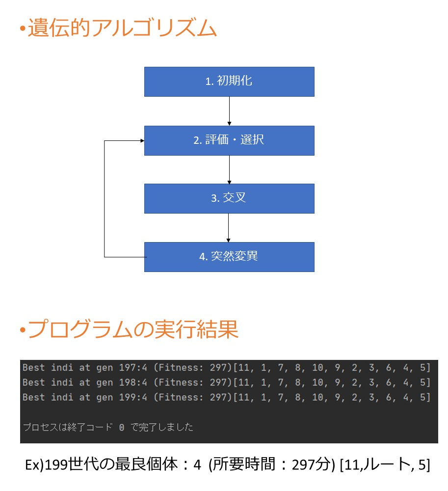

2021.02 Pythonで作成．
ツイートされた内容に対して，漫画「ピンポン」に登場するキャラクターが返答するプログラムを作成しました．
GitHub
https://github.com/aTajima98/Chat_Bot
処理手順
1. 入力(文章)を受け取る
2. 入力文と質問文に形態素解析を行う(Janome)
3. 文章をベクトル化する(Doc2Vec)
4. 入力文と質問文のコサイン類似度を計算する
5. 類似度の高いものを返す．or 最上位の類似度が低い場合は「わかりません」集からランダムに一つ選ぶ
6. 1~5の操作を入力を受け取るたびに繰り
プログラムについて
このプログラムは，つぶやきを得ると，作成した一問一答集からそのつぶやきに近い質問文を見つけ，対応する解答文を返す．
この時，つぶやきと質問文に形態素解析を行って文章をベクトル化し，つぶやきと質問文間の類似度をすべて計算し，最も類似度が高い質問文に対応する解答文を返している．
形態素解析にJanomeを使用し，文章のベクトル化にDoc2Vecを使用し，類似度はコサイン類似度を使用した．
チャットボットの相手として，漫画「ピンポン」に登場するペコというキャラクターと対話が行えるように，一問一答集を作成した．
- 形態素解析:sep_by_janome(text)
- 入力された文章に対してjanomeによって単語に分割し，分割された単語間にスペースを挟んで連結する．
- 文章をベクトル化:model.infer_vector(形態素解析した文章)
- 形態素解析で単語に分割された文章をベクトル化する．ベクトル化のモデルに，model = Doc2Vec.load("jawiki.doc2vec.dbow300d.model")の学習済みモデルを使用した．
- 学習済みモデルは，[使用した学習済みモデル]に出典を示す．
- コサイン類似度を計算:np.dot(input_vec, v2) / (np.linalg.norm(input_vec) * np.linalg.norm(v2))...v2は質問文ベクトル
- 入力文と各質問文間の類似度を計算．
コーディングについて
Pythonで約150行でコーディングを行いました．プログラムは，GitHubに置いてあります．
一問一答集は漫画「ピンポン」から自作しました．
文章のベクトル化に学習済みモデルを使用しています．これは，自作した一問一答集で学習したモデルを使うよりもよい精度が出たためです．
チャットを行うサービスにMastodonを利用しています．